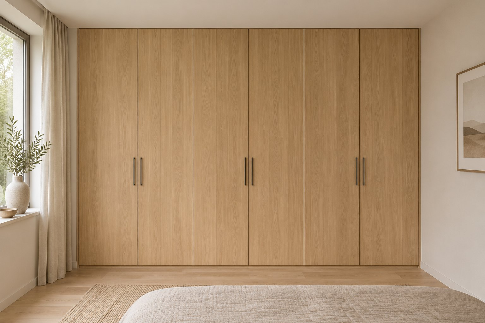

Встроенный шкаф «Норд»
От пола до потолка

Шкаф проектируется под размер ниши. Верхний ярус можно отвести под сезонные вещи, а основную зону — под ежедневное хранение. При замере учитываются отклонения стен, потолка и пола, чтобы панели аккуратно примкнули к проёму.
Характеристики
- Конфигурация
- От пола до потолка
- Установка
- В нише от пола до потолка
- Двери
- Распашные фасады с доборными панелями
- Наполнение
- Верхние полки, штанга и бытовые секции
Возможные материалы
- Корпус из ЛДСП
- Фасады с фактурой светлого дуба
- Матовые металлические ручки
Преимущества
- Верхнее хранение использует высоту ниши
- Единая плоскость фасадов